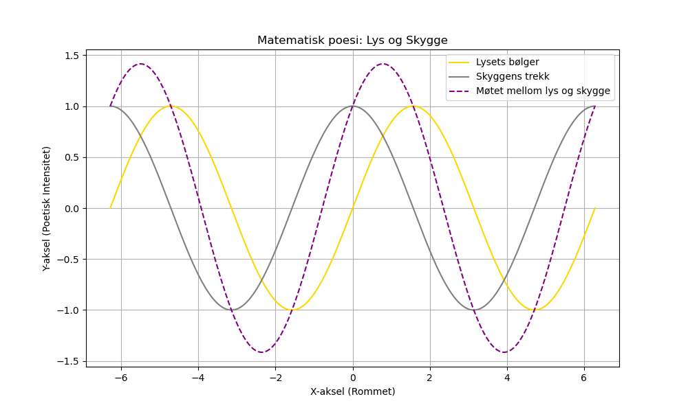

Dagens dikt
**Møtet mellom lys og skygge**
En kalkulator på rommets vakt,
ser lysets bølger, mørket i sakte takt.
To verdener, en grå linje, strek,
møtes i arkitektur der skjønnhet veksler lekk.
Skyggen sier: "Jeg trekker deg mot meg,"
Lysets stemme frekker: "Fritt, jeg motstår deg."
De bue krysser mellom sin eksakte sang,
et sinuslied, i bølgende fang.
Og slik, en kurve de danser sammen,
mørke og lys med geometrisk flammen.
Matematisk poesi, enkel men dyp,
En graf vokser frem fra universets syvti.
---

Kode
import numpy as np
import matplotlib.pyplot as plt
# Matematisk representasjon av diktet
x = np.linspace(-2 * np.pi, 2 * np.pi, 1000) # Fra lys til mørke
y_light = np.sin(x) # Lysets bølgende stemme
y_shadow = np.cos(x) # Skyggens dype trekk
# Kombinasjon mellom lys og skygge
y_combined = y_light + y_shadow # Den møtepunkt-poetiske dansen
# Plotter kurvene
plt.figure(figsize=(10, 6))
plt.plot(x, y_light, label="Lysets bølger", color="gold")
plt.plot(x, y_shadow, label="Skyggens trekk", color="gray")
plt.plot(x, y_combined, label="Møtet mellom lys og skygge", color="purple", linestyle='--')
plt.title("Matematisk poesi: Lys og Skygge")
plt.xlabel("X-aksel (Rommet)")
plt.ylabel("Y-aksel (Poetisk Intensitet)")
plt.legend()
plt.grid(True)
plt.savefig('2025-03-20-20-00-39.png')